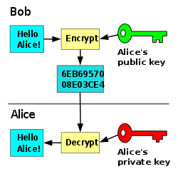
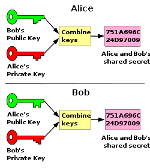
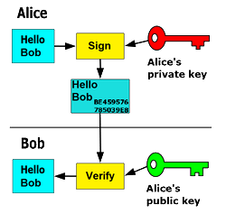
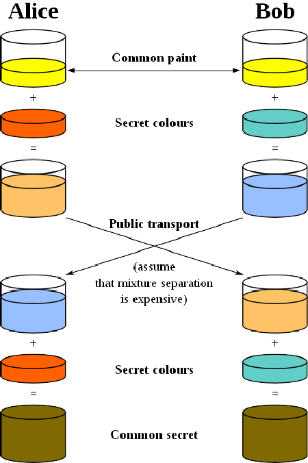
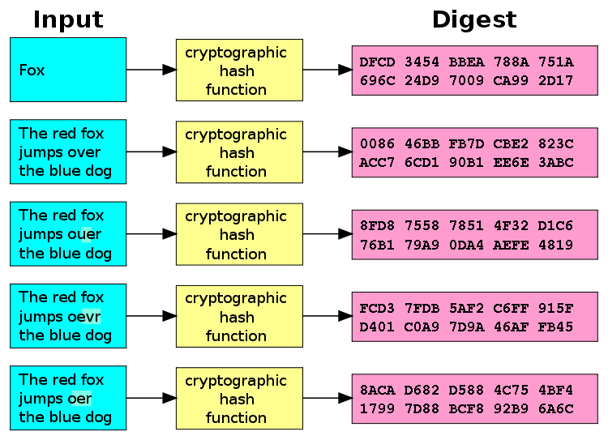

# Secure Shell (SSH) Architecture & Deployment <!-- .element: class="subtitle" --> --- ## What is SSH? SSH is a **cryptographic network protocol** for operating network services **securely over an unsecured network**. --- ### What is it used for? <div class="flex flex-col gap-4"> <div class="flex justify-center items-center gap-2"> <iconify-icon icon="fluent:window-text-24-regular" noobserver></iconify-icon> Command line login </div> <div class="flex justify-center items-center gap-2"> <iconify-icon icon="cib:git" noobserver></iconify-icon> Git </div> <div class="flex justify-center items-center gap-2"> <iconify-icon icon="fluent:folder-arrow-up-24-regular" noobserver></iconify-icon> SFTP </div> </div> --- ### How does it work? SSH is a **client-server** protocol. <pre class="mermaid loading"> architecture-beta service sshcl1(fluent:window-text-24-regular)[SSH Client] service sshcl2(fluent:window-text-24-regular)[SSH Client] service sshcl3(fluent:window-text-24-regular)[SSH Client] service sshsrv(fluent:server-24-regular)[SSH Server] sshcl1:R --> L:sshsrv sshcl2:L --> R:sshsrv sshcl3:R --> T:sshsrv </pre> **Notes:** Using an SSH client, a user (or application) on machine A can connect to an SSH server running on machine B, either to log in (with a command line shell) or to execute programs. --- ### Same terminal, remote shell <!-- Each step of the diagram is a fragment of this slide. The deck prints it fully drawn. See "Architecture Diagrams" in `course/CONTRIBUTING.md`. --> <div class="mx-auto w-5/6"> <!-- Generated from diagrams/103-ssh.svg and 103-ssh.ts by "npm run diagrams": edit those instead. --> <div class="diagram-figure" data-diagram="103-ssh"> <div class="diagram-canvas"> <svg xmlns="http://www.w3.org/2000/svg" class="diagram" viewBox="0 0 1100 670" role="img" aria-labelledby="diagram-103-ssh-title"> <title id="diagram-103-ssh-title">An SSH connection and the processes at both ends</title> <style id="diagram-103-ssh-diagram-styles"> svg.diagram { font-family: 'PT Sans', Helvetica, Arial, sans-serif; } svg.diagram .lane-heading { font-size: 24px; font-weight: 700; fill: #000; text-anchor: middle; } svg.diagram .boundary line { stroke: #000; stroke-width: 5; stroke-dasharray: 14 12; } svg.diagram .cloud path { fill: #fff; stroke: #aaa; stroke-width: 2; } svg.diagram .cloud text { font-size: 15px; fill: #666; text-anchor: middle; } svg.diagram .process rect { fill: #f9505a; stroke: #c93a43; stroke-width: 1; } svg.diagram .process text { fill: #fff; text-anchor: middle; } svg.diagram .process .label { font-size: 16px; font-weight: 700; } svg.diagram .process .subtitle { font-size: 12px; font-style: italic; } svg.diagram .process .command { font-family: ui-monospace, SFMono-Regular, Menlo, Monaco, Consolas, 'Liberation Mono', 'Courier New', monospace; font-size: 12px; font-weight: 700; } svg.diagram .edge path { fill: none; stroke: #000; stroke-width: 1.25; } svg.diagram .edge.control path { stroke-dasharray: 3 4; } svg.diagram .edge text { font-size: 14px; fill: #000; text-anchor: middle; paint-order: stroke; stroke: #fff; stroke-width: 8px; stroke-linejoin: round; } svg.diagram .edge text.beside { text-anchor: end; } svg.diagram .socket path { fill: none; stroke: #000; stroke-width: 1.5; stroke-linecap: round; } svg.diagram .process .socket text, svg.diagram .socket text { font-size: 14px; fill: #000; text-anchor: end; } svg.diagram .marker-comm { fill: #000; } svg.diagram .marker-control { fill: #fff; stroke: #000; stroke-width: 1.25; } svg.diagram .legend .frame { fill: none; stroke: #999; stroke-dasharray: 2 2; } svg.diagram .legend .title { font-size: 18px; font-style: italic; text-anchor: middle; } svg.diagram .legend .entry { font-size: 12px; text-anchor: end; } </style><style class="diagram-motion">/* The steps of a diagram: what they hide, show and move, in a deck and in a page alike. The generator copies this file into every diagram it generates, after the diagram's own look, so that an included diagram needs no stylesheet of the site's. The motion script and the page stepper only change classes. A diagram is "fully drawn" when no step is reached: what was drawn in the file, without what only a step shows. That is the state a page opens with, the one a deck prints, and the one shown without JavaScript. */ /* --- At rest ------------------------------------------------------------- */ svg.diagram .prompt, svg.diagram .process .cog { display: none; } svg.diagram .process rect.glow { fill: #fff; stroke: none; opacity: 0; } svg.diagram .process .cog path { fill: #fff; fill-rule: evenodd; stroke: none; } /* Travelling data exists only while it travels. */ svg.diagram .overlay:not(.visible) { display: none; } /* Transient: shown from its step until it is torn down, but not when fully drawn, such as a command that has finished by the end of the story. */ svg.diagram .transient:not(.visible) { display: none; } /* A short-lived process, and the control edge that started it, only while their step is the current one. */ svg.diagram .passing:not(.current-fragment) { opacity: 0; visibility: hidden; } /* --- Typing -------------------------------------------------------------- */ /* The typed text and the cursor are placed after the prompt in characters of the monospace font, whichever one shows them. */ svg.diagram .prompt text, svg.diagram .process .prompt text, svg.diagram .prompt-line text { font-family: ui-monospace, SFMono-Regular, Menlo, Monaco, Consolas, 'Liberation Mono', 'Courier New', monospace; font-size: 12px; font-weight: 700; fill: #000; text-anchor: start; } svg.diagram .prompt .typed, svg.diagram .prompt .cursor { transform: translateX(calc(var(--at, 0) * 1ch)); } svg.diagram .prompt .cursor { display: none; } /* --- Folding ------------------------------------------------------------- */ /* Until the fold, each folded process shows its own label, and the edges between them are drawn; after it, the stack's label. The motion script moves the processes and sets `unfolded`. */ svg.diagram .process .own { opacity: 0; transition: opacity 0.4s; } svg.diagram.unfolded .process .own { opacity: 1; } svg.diagram .process .stack-label { transition: opacity 0.4s; } svg.diagram.unfolded .process .stack-label { opacity: 0; } svg.diagram .folds-away path { opacity: 0; transition: opacity 0.4s; } svg.diagram.unfolded .folds-away path { opacity: 1; } /* --- Data ---------------------------------------------------------------- */ /* A trip in two clicks: to the middle, where it waits, then the rest of the way. Along the edge from --from to --to, which run backwards when it travels against the arrow. */ svg.diagram .packet path { fill: #1f6feb; stroke: #1f6feb; stroke-width: 3; stroke-linejoin: round; } svg.diagram .packet text { fill: #fff; font-size: 13px; font-weight: 700; text-anchor: middle; } svg.diagram .packet .leg { offset-rotate: 0deg; offset-distance: 50%; } /* The second click must not hide the data before it is reached. */ svg.diagram .packet .leg.fragment { opacity: 1; visibility: inherit; } svg.diagram .packet .leg.fragment.visible { offset-distance: var(--to); opacity: 0; } /* In one click: gone once the next step is reached. */ svg.diagram .packet.whole.visible:not(.current-fragment) .leg:not(.visible) { animation: none; opacity: 0; } /* Nor does the second half of a trip outlive its step, such as a slow one cut short by a click. */ svg.diagram .packet .leg.fragment.visible:not(.current-fragment) { animation: none; opacity: 0; } /* --- Torn down ----------------------------------------------------------- */ /* Gone from a step on, such as a session closing; the fully drawn diagram still shows it. The motion script sets `gone`. */ svg.diagram .gone { /* Important: reveal.js's rules for visible fragments are more specific. */ opacity: 0 !important; visibility: hidden !important; transition: opacity 0.6s, visibility 0s 0.6s !important; } /* --- Motion -------------------------------------------------------------- */ @media screen and (prefers-reduced-motion: no-preference) { /* A connection draws itself from the side that opened it: the path's length is 1 (`pathLength`), whatever its shape. */ svg.diagram .draw-on.visible path { stroke-dasharray: 1 1; animation: diagram-draw 0.7s ease-out var(--delay, 0s) both; } /* Its label arrives with the line, not before. */ svg.diagram .draw-on.visible text { animation: diagram-fade-in 0.3s ease-out calc(var(--delay, 0s) + 0.5s) both; } /* A control edge appears, then the process it starts. */ svg.diagram .fade-on.visible { animation: diagram-fade-in 0.4s ease-out var(--delay, 0s) both; } /* The cursor types, then disappears on Enter. */ svg.diagram :is(.spawn, .input).visible .prompt .cursor { display: inline; animation: diagram-cursor-move var(--type) steps(var(--chars), end) var(--t0) both, diagram-cursor-blink 0.5s step-end infinite, diagram-cursor-off 0.01s var(--enter) both; } /* Typed at a shell's prompt or into an application, which clears on Enter. */ svg.diagram :is(.spawn, .input).visible .prompt { display: inline; animation: diagram-cursor-off 0.01s var(--enter) both; } svg.diagram :is(.spawn, .input).visible .prompt .typed { animation: diagram-type var(--type) steps(var(--chars), end) var(--t0) both; } /* The process starts: its box, its text, then its listening port. */ svg.diagram :is(.spawn, .child).visible > rect:not(.glow) { transform-box: fill-box; transform-origin: center; animation: diagram-box-in 0.35s ease-out var(--launch) both; } svg.diagram :is(.spawn, .child).visible > text { animation: diagram-fade-in 0.3s ease-out var(--launch) both; } svg.diagram :is(.spawn, .child).visible .socket { animation: diagram-fade-in 0.3s ease-out calc(var(--launch) + 0.4s) both; } /* A process working while its step is the current one: its box brightens three times while a cog turns in its top right corner, then both settle, the cog slowing to a stop as the last pulse ends. A still cog means settings, so it fades out as it stops. */ svg.diagram .process:has(> .pulse.current-fragment) > .glow { animation: diagram-glow 0.8s ease-in-out 3; } svg.diagram .process:has(> .pulse.current-fragment) .cog { display: inline; animation: diagram-fade-out 0.3s ease-in 2.3s both; } svg.diagram .process:has(> .pulse.current-fragment) .cog path { transform-box: fill-box; transform-origin: center; animation: diagram-spin 2.4s cubic-bezier(0.3, 0.5, 0.5, 1) both; } svg.diagram .packet.visible .leg:not(.visible) { animation: diagram-leg-1 0.9s ease-in-out both; } svg.diagram .packet.whole.visible .leg:not(.visible) { animation: diagram-trip 1.8s ease-in-out both; } svg.diagram .packet.visible .leg.visible { animation: diagram-leg-2 1.6s ease-in-out both; } /* Heavy data, such as the hundreds of files of node_modules, is slower. */ svg.diagram .packet.heavy.visible .leg:not(.visible) { animation-duration: 2.7s; } svg.diagram .packet.heavy.visible .leg.visible { animation-duration: 4.8s; } /* A short-lived process works once started, then exits after a moment to read it: its box and its edge fade out. No transition into its step: Firefox would hold the box at the start of the transition, transparent, while its exit animation waits to begin. */ svg.diagram .process.passing.current-fragment, svg.diagram .edge.passing.current-fragment { transition: none; } svg.diagram .passing.current-fragment > .glow { animation: diagram-glow 0.8s ease-in-out var(--work) 3; } svg.diagram .passing.current-fragment .cog { display: inline; animation: diagram-fade-out 0.3s ease-in calc(var(--work) + 2.3s) both; } svg.diagram .passing.current-fragment .cog path { transform-box: fill-box; transform-origin: center; animation: diagram-spin 2.4s cubic-bezier(0.3, 0.5, 0.5, 1) var(--work) both; } svg.diagram .process.passing.current-fragment { animation: diagram-exit 0.8s ease-in calc(var(--work) + 3.9s) forwards; } svg.diagram .edge.passing.current-fragment { animation: diagram-fade-in 0.4s ease-out var(--delay, 0s) both, diagram-exit 0.8s ease-in calc(var(--work) + 3.9s) forwards; } /* Shown once the data that brings it has arrived. */ svg.diagram .arrives.visible { animation: diagram-fade-in 0.2s ease-out 1.1s both; } } @keyframes diagram-draw { /* The arrowhead waits for the line to reach it. */ from { stroke-dashoffset: 1; marker-end: none; } 99% { marker-end: none; } to { stroke-dashoffset: 0; } } @keyframes diagram-leg-1 { from { offset-distance: var(--from); opacity: 0; } 20% { opacity: 1; } to { offset-distance: 50%; opacity: 1; } } /* Delivered: it sits on the box a moment, then fades. */ @keyframes diagram-leg-2 { from { offset-distance: 50%; opacity: 1; } 55% { offset-distance: var(--to); opacity: 1; } 80% { opacity: 1; } to { offset-distance: var(--to); opacity: 0; } } @keyframes diagram-trip { from { offset-distance: var(--from); opacity: 0; } 10% { opacity: 1; } 60% { offset-distance: var(--to); opacity: 1; } 85% { opacity: 1; } to { offset-distance: var(--to); opacity: 0; } } @keyframes diagram-cursor-move { from { transform: translateX(calc(var(--at, 0) * 1ch)); } to { transform: translateX(calc((var(--at, 0) + var(--chars)) * 1ch)); } } @keyframes diagram-cursor-blink { 50% { opacity: 0; } } @keyframes diagram-cursor-off { to { visibility: hidden; } } @keyframes diagram-type { from { clip-path: inset(0 100% 0 0); } to { clip-path: inset(0); } } @keyframes diagram-box-in { from { opacity: 0; transform: scale(0.8, 0.5); } to { opacity: 1; transform: none; } } @keyframes diagram-fade-in { from { opacity: 0; } } @keyframes diagram-glow { 50% { opacity: 0.3; } } @keyframes diagram-spin { to { transform: rotate(1turn); } } @keyframes diagram-fade-out { to { opacity: 0; } } @keyframes diagram-exit { from { opacity: 1; } to { opacity: 0; } } /* --- Around the diagram -------------------------------------------------- */ /* Drawn for a white background, in a dark page and on a slide alike. */ .diagram-figure .diagram-canvas { background: #fff; border-radius: 8px; padding: 8px; } .diagram-figure svg.diagram { display: block; width: 100%; height: auto; } /* A deck hides the legend, the teacher being there to explain, except in print, which shows the diagram fully drawn. */ .diagram-figure.in-deck:not(.printed) .legend { display: none; } .diagram-figure.in-deck svg.diagram { max-height: 520px; } /* A page stepping through the diagram does what reveal.js does in a deck: hides the steps not reached yet. The captions say what the legend would. */ .diagram-figure.stepping svg.diagram .fragment { transition: opacity 0.2s; } .diagram-figure.stepping svg.diagram .fragment:not(.visible):not(.leg) { opacity: 0; visibility: hidden; } .diagram-figure.stepping .legend { display: none; } /* The page's controls, in whatever colours the page is in. */ .diagram-figure .diagram-caption { margin: 0.5em 0.25em 0; } .diagram-figure .diagram-controls { display: flex; flex-wrap: wrap; align-items: center; gap: 0.5em; margin-top: 0.5em; } .diagram-figure .diagram-controls button { font: inherit; font-size: 0.9em; color: inherit; background: color-mix(in srgb, currentColor 8%, transparent); border: 1px solid color-mix(in srgb, currentColor 25%, transparent); border-radius: 6px; padding: 0.2em 0.75em; cursor: pointer; } .diagram-figure .diagram-controls button:disabled { opacity: 0.4; cursor: default; } .diagram-figure .diagram-controls button.primary { background: #1f6feb; border-color: #1f6feb; color: #fff; } .diagram-figure .diagram-controls .counter { min-width: 7em; text-align: center; font-size: 0.9em; opacity: 0.7; } /* Printed fully drawn, with the caption that goes with it. */ @media print { .diagram-figure .diagram-controls { display: none; } .diagram-figure .diagram-canvas { break-inside: avoid; } } </style> <defs id="diagram-103-ssh-diagram-defs"> <marker id="diagram-103-ssh-arrow-comm" viewBox="0 0 12 8" refX="12" refY="4" markerWidth="12" markerHeight="8" markerUnits="userSpaceOnUse" orient="auto"> <path class="marker-comm" d="M0,0 L12,4 L0,8 z"/> </marker> <marker id="diagram-103-ssh-arrow-control" viewBox="-1 -1 14 10" refX="12" refY="4" markerWidth="14" markerHeight="10" markerUnits="userSpaceOnUse" orient="auto"> <path class="marker-control" d="M0,0 L12,4 L0,8 z"/> </marker> </defs><g class="fragment teardown" data-fragment-index="11"/><g class="fragment teardown" data-fragment-index="10"/><g class="fragment teardown" data-fragment-index="3"/> <g id="diagram-103-ssh-lane-computer" class="lane"><text class="lane-heading" x="260" y="58">Your Computer</text></g> <g id="diagram-103-ssh-lane-server" class="fragment lane" data-fragment-index="4"><text class="lane-heading" x="880" y="58">Server</text></g> <g id="diagram-103-ssh-boundary-internet" class="fragment boundary" data-fragment-index="4"> <line x1="520" y1="48" x2="520" y2="650"/> <line x1="660" y1="48" x2="660" y2="650"/> </g> <g id="diagram-103-ssh-cloud-internet" class="fragment cloud" data-fragment-index="4"> <path d="M558,96 a14,14 0 0 1 -2,-28 a20,20 0 0 1 34,-14 a18,18 0 0 1 32,8 a14,14 0 0 1 4,34 z"/> <text x="590" y="80">Internet</text> </g> <g id="diagram-103-ssh-node-terminal" class="fragment process" data-fragment-index="0"> <rect x="40" y="96" width="200" height="46" rx="8"/> <text class="label" x="140" y="124">Terminal</text> </g> <g id="diagram-103-ssh-node-local-shell" class="fragment child process" data-fragment-index="0" style="--launch: 0.6s"> <rect x="40" y="186" width="200" height="46" rx="8"/> <text class="label" x="140" y="214">Shell (Bash/Zsh)</text> </g> <g id="diagram-103-ssh-node-local-command" class="fragment spawn process transient" data-fragment-index="1" style="--chars: 2; --t0: 0.3s; --type: 0.16s; --enter: 0.86s; --launch: 1.46s" data-gone-from="3"><g class="prompt" style="--at: 3"><text class="sign" x="46" y="250">$></text><text class="typed" x="46" y="250">ls</text><text class="cursor" x="46" y="250">█</text></g> <rect x="40" y="276" width="200" height="46" rx="8"/><rect x="40" y="276" width="200" height="46" rx="8" class="glow"/><g class="cog"><path d="M232.35,287.72 L234.45,288.18 L234.45,289.82 L232.35,290.28 L231.69,291.87 L232.85,293.69 L231.69,294.85 L229.87,293.69 L228.28,294.35 L227.82,296.45 L226.18,296.45 L225.72,294.35 L224.13,293.69 L222.31,294.85 L221.15,293.69 L222.31,291.87 L221.65,290.28 L219.55,289.82 L219.55,288.18 L221.65,287.72 L222.31,286.13 L221.15,284.31 L222.31,283.15 L224.13,284.31 L225.72,283.65 L226.18,281.55 L227.82,281.55 L228.28,283.65 L229.87,284.31 L231.69,283.15 L232.85,284.31 L231.69,286.13 Z M229.3,289 A2.3,2.3 0 1 0 224.7,289 A2.3,2.3 0 1 0 229.3,289 Z"/></g> <text class="label" x="140" y="296">Command</text> <text class="command" x="140" y="312">ls</text> <g class="fragment pulse" data-fragment-index="2"/></g> <g id="diagram-103-ssh-node-ssh-client" class="fragment spawn process" data-fragment-index="5" style="--chars: 19; --t0: 0.3s; --type: 1.52s; --enter: 2.22s; --launch: 2.82s"><g class="prompt" style="--at: 3"><text class="sign" x="46" y="250">$></text><text class="typed" x="46" y="250">ssh jde@example.com</text><text class="cursor" x="46" y="250">█</text></g> <rect x="290" y="186" width="200" height="46" rx="8"/> <text class="label" x="390" y="206">SSH Client</text> <text class="command" x="390" y="222">ssh jde@example.com</text> </g> <g id="diagram-103-ssh-node-sshd" class="fragment process" data-fragment-index="4"> <rect x="760" y="96" width="200" height="46" rx="8"/> <text class="label" x="860" y="124">SSH Server</text> <g id="diagram-103-ssh-socket-sshd-22" class="socket"> <path d="M760,112 L742,96 M760,126 L742,142"/> <text x="746" y="90">22</text> </g> </g> <g id="diagram-103-ssh-node-ssh-session" class="fragment child process" data-fragment-index="6" style="--launch: 0.6s"> <rect x="760" y="186" width="200" height="46" rx="8"/> <text class="label" x="860" y="214">SSH Session</text> </g> <g id="diagram-103-ssh-node-remote-shell" class="fragment child process" data-fragment-index="8" style="--launch: 0.6s"> <rect x="760" y="276" width="200" height="46" rx="8"/> <text class="label" x="860" y="304">Shell (Bash/Zsh)</text> </g> <g id="diagram-103-ssh-remote-prompt-l" class="fragment prompt-line transient arrives" data-fragment-index="9" data-gone-from="10" style="--gone-delay: 1.1s"><text x="766" y="340">$> l</text></g> <g id="diagram-103-ssh-remote-prompt-ls" class="fragment prompt-line transient arrives" data-fragment-index="10" data-gone-from="11" style="--gone-delay: 1.1s"><text x="766" y="340">$> ls</text></g> <g id="diagram-103-ssh-node-remote-command" class="fragment child process" data-fragment-index="11" style="--launch: 1.7s"> <rect x="760" y="366" width="200" height="46" rx="8"/><rect x="760" y="366" width="200" height="46" rx="8" class="glow"/><g class="cog"><path d="M952.35,377.72 L954.45,378.18 L954.45,379.82 L952.35,380.28 L951.69,381.87 L952.85,383.69 L951.69,384.85 L949.87,383.69 L948.28,384.35 L947.82,386.45 L946.18,386.45 L945.72,384.35 L944.13,383.69 L942.31,384.85 L941.15,383.69 L942.31,381.87 L941.65,380.28 L939.55,379.82 L939.55,378.18 L941.65,377.72 L942.31,376.13 L941.15,374.31 L942.31,373.15 L944.13,374.31 L945.72,373.65 L946.18,371.55 L947.82,371.55 L948.28,373.65 L949.87,374.31 L951.69,373.15 L952.85,374.31 L951.69,376.13 Z M949.3,379 A2.3,2.3 0 1 0 944.7,379 A2.3,2.3 0 1 0 949.3,379 Z"/></g> <text class="label" x="860" y="386">Command</text> <text class="command" x="860" y="402">ls</text> <g class="fragment pulse" data-fragment-index="12"/></g> <g id="diagram-103-ssh-edge-terminal-local-shell" class="fragment fade-on edge control" data-fragment-index="0" style="--delay: 0s"> <path d="M140,142 V186" marker-end="url(#diagram-103-ssh-arrow-control)"/> </g> <g id="diagram-103-ssh-edge-local-shell-local-command" class="fragment fade-on edge control transient" data-fragment-index="1" style="--delay: 0.86s" data-gone-from="3"> <path d="M140,232 V276" marker-end="url(#diagram-103-ssh-arrow-control)"/> </g> <g id="diagram-103-ssh-edge-local-shell-ssh-client" class="fragment fade-on edge control" data-fragment-index="5" style="--delay: 2.22s"> <path d="M240,209 H290" marker-end="url(#diagram-103-ssh-arrow-control)"/> </g> <g class="fragment hand-over" data-fragment-index="7"/><g id="diagram-103-ssh-edge-ssh-client-ssh-session" class="fragment draw-on edge comm" data-to-listener="M490,209 H560 C640,209 640,119 760,119" data-fragment-index="5" style="--delay: 3.22s"> <path d="M490,209 H560 C640,209 640,209 760,209" marker-end="url(#diagram-103-ssh-arrow-comm)" pathLength="1"/> <text x="590" y="214">example.com</text> </g> <g id="diagram-103-ssh-edge-sshd-ssh-session" class="fragment fade-on edge control" data-fragment-index="6" style="--delay: 0s"> <path d="M860,142 V186" marker-end="url(#diagram-103-ssh-arrow-control)"/> </g> <g id="diagram-103-ssh-edge-ssh-session-remote-shell" class="fragment fade-on edge control" data-fragment-index="8" style="--delay: 0s"> <path d="M860,232 V276" marker-end="url(#diagram-103-ssh-arrow-control)"/> </g> <g id="diagram-103-ssh-edge-remote-shell-remote-command" class="fragment fade-on edge control" data-fragment-index="11" style="--delay: 1.1s"> <path d="M860,322 V366" marker-end="url(#diagram-103-ssh-arrow-control)"/> </g> <g id="diagram-103-ssh-legend" class="legend" transform="translate(0,170)"> <rect class="frame" x="32" y="292" width="308" height="190"/> <text class="title" x="186" y="318">Legend</text> <g class="process"> <rect x="94" y="337" width="182" height="31" rx="6"/> <text class="label" x="185" y="358">Process</text> </g> <text class="entry" x="147" y="397">Communication</text> <g class="edge comm"><path d="M157,393 H320" marker-end="url(#diagram-103-ssh-arrow-comm)"/></g> <text class="entry" x="147" y="419">Control</text> <g class="edge control"><path d="M157,415 H320" marker-end="url(#diagram-103-ssh-arrow-control)"/></g> <text class="entry" x="147" y="441">Network Boundary</text> <g class="boundary"><line x1="157" y1="437" x2="322" y2="437"/></g> <text class="entry" x="147" y="465">Listening Port</text> <g class="process"><rect x="304" y="452" width="22" height="18" rx="3"/></g> <g class="socket"><path d="M304,457 L291,448 M304,465 L291,474"/></g> </g> <g class="overlay packet fragment whole" data-fragment-index="9"><g class="leg" style="offset-path: path('M490,209 H560 C640,209 640,209 760,209'); --from: 0%; --to: 100%"><path d="M-15,-12 H5 L15,0 L5,12 H-15 Z"/><text x="-5" y="5">l</text></g></g><g class="overlay packet fragment whole" data-fragment-index="10"><g class="leg" style="offset-path: path('M490,209 H560 C640,209 640,209 760,209'); --from: 0%; --to: 100%"><path d="M-15,-12 H5 L15,0 L5,12 H-15 Z"/><text x="-5" y="5">s</text></g></g><g class="overlay packet fragment whole" data-fragment-index="11"><g class="leg" style="offset-path: path('M490,209 H560 C640,209 640,209 760,209'); --from: 0%; --to: 100%"><path d="M-15,-12 H5 L15,0 L5,12 H-15 Z"/><text x="-5" y="5">⏎</text></g></g><g class="overlay packet fragment whole" data-fragment-index="13"><g class="leg" style="offset-path: path('M490,209 H560 C640,209 640,209 760,209'); --from: 100%; --to: 0%"><path d="M-35,-12 H25 L35,0 L25,12 H-35 Z" transform="scale(-1,1)"/><text x="5" y="5">output</text></g></g></svg> </div> <template class="diagram-captions"><p data-caption="rest">Your terminal’s shell started the SSH client, which is connected to <code>example.com</code> on port 22. There, the SSH session started a shell, which runs your commands on the server.</p><p data-caption="0">Your computer.</p><p data-caption="1">You open a terminal, which starts a shell: Bash or Zsh.</p><p data-caption="2">You run a command, <code>ls</code> or any other: the shell starts it, and it runs on your computer.</p><p data-caption="3"><code>ls</code> works: it lists the files of the current directory, and prints them to your terminal.</p><p data-caption="4">It has finished, and exits.</p><p data-caption="5">Across the Internet, a server runs an SSH server, waiting for connections on port 22.</p><p data-caption="6">You run <code>ssh jde@example.com</code>: your shell starts the SSH client, which connects to port 22 on <code>example.com</code>.</p><p data-caption="7">The SSH server accepts the connection, and starts a new SSH session to take care of it.</p><p data-caption="8">It hands the connection over to the session, then goes back to waiting for the next one.</p><p data-caption="9">The session starts a shell on the server.</p><p data-caption="10">You type <code>l</code>. Your terminal hands it to the SSH client, which sends it over the connection at once, encrypted. On the server, the session hands it to the shell.</p><p data-caption="11">You type <code>s</code>: it travels the same way.</p><p data-caption="12">You press Enter, which travels too. Once it has arrived, the server’s shell runs <code>ls</code>, on the server.</p><p data-caption="13"><code>ls</code> works, on the server: it lists the files of the current directory there.</p><p data-caption="14">Its output travels back over the connection, against the arrow, and your terminal displays it.</p></template> </div> </div> **Notes:** Without SSH, your terminal talks to a shell running on your own machine, and every command you type runs there. The **SSH client** is a command like any other: your local shell starts it when you type `ssh`. It connects to the **SSH server** on the remote computer, which starts a **shell on the server** for you. From then on, your terminal is the same, but what you type goes through the secure channel to that remote shell, and the commands it starts **run on the server**. Their output comes back through the channel and is displayed in your terminal. The prompt may look different, but nothing else in the window tells you which machine you are talking to. The `hostname` command does: it prints the name of the machine it runs on. --- ### How is it secure? 1. SSH establishes a **secure channel**. 2. It then requires **authentication**. **Notes:** Note that steps 1 and 2 are **separate and unrelated processes**. --- ### Step 1: the secure channel <div class="grid grid-cols-12"> <div class="col-span-4 flex flex-col justify-center items-end"> <div class="flex flex-col items-center"> <iconify-icon icon="fluent:laptop-24-regular" noobserver width="160" height="160"></iconify-icon> <span class="text-3xl">SSH Client</span> </div> </div> <div class="col-span-4 flex flex-col justify-center items-center"> </div> <div class="col-span-4 flex flex-col justify-center items-start"> <div class="flex flex-col items-center"> <iconify-icon icon="fluent:server-24-regular" noobserver width="160" height="160"></iconify-icon> <span class="text-3xl">SSH Server</span> </div> </div> </div> _This is done for you and (mostly) automatic._ **Notes:** SSH establishes a **secure channel** between client and server using various **cryptographic techniques**. This is handled automatically by the SSH client and server. --- ### Step 2: authentication <div class="grid grid-cols-12"> <div class="col-span-5"> <div class="size-full flex flex-col justify-center items-end"> <div class="chat chat-start"> <div class="chat-header">1. SSH Client</div> <div class="chat-bubble chat-bubble-primary min-h-0 text-[1rem]">Hi, I'd like to log in as user "bob".</div> </div> <iconify-icon icon="fluent:laptop-24-regular" noobserver width="160" height="160"></iconify-icon> <div class="chat chat-start"> <div class="chat-header">3. SSH Client</div> <div class="chat-bubble chat-bubble-info min-h-0 text-[1rem]">Here's bob's password.</div> </div> </div> </div> <div class="col-span-2"> <div class="size-full flex justify-center items-center"> </div> </div> <div class="col-span-5"> <div class="size-full flex flex-col justify-center items-start"> <div class="chat chat-end"> <div class="chat-header">2. SSH Server</div> <div class="chat-bubble chat-bubble-error min-h-0 text-[1rem]">Oh yeah? How do I know you're bob?</div> </div> <iconify-icon icon="fluent:server-24-regular" noobserver width="160" height="160"></iconify-icon> <div class="chat chat-end"> <div class="chat-header">4. SSH Server</div> <div class="chat-bubble chat-bubble-success min-h-0 text-[1rem]">Go right ahead.</div> </div> </div> </div> </div> **Notes:** The user or service that wants to connect to the SSH server must **authenticate** to gain access, for example with a password. --- ### Security through cryptography - [Symmetric encryption](https://en.wikipedia.org/wiki/Symmetric-key_algorithm) - [Asymmetric cryptography](https://en.wikipedia.org/wiki/Public-key_cryptography) - Key exchange - Digital signatures - [Hash-based Message Authentication Codes (HMAC)](https://en.wikipedia.org/wiki/HMAC) **Notes:** SSH establishes a **secure channel** between two computers **over an insecure network** (e.g. a local network or the Internet). Establishing and using this secure channel requires a combination of various cryptographic techniques. --- ### Symmetric encryption  **Notes:** [Symmetric-key algorithms](https://en.wikipedia.org/wiki/Symmetric-key_algorithm) can be used to encrypt communications between two or more parties using a **shared secret**. [AES](https://en.wikipedia.org/wiki/Advanced_Encryption_Standard) is one such algorithm. **Assuming all parties possess the secret key**, they can encrypt data, send it over an insecure network, and decrypt it on the other side. An attacker who intercepts the data **cannot decrypt it without the key** (unless a weakness is found in the algorithm or [its implementation](https://en.wikipedia.org/wiki/Cryptanalysis_of_the_Enigma#Operating_shortcomings)). But **both parties must have the key**. It used to be **physically transferred**, for example in the form of the codebooks used to operate the German [Enigma machine](https://en.wikipedia.org/wiki/Enigma_machine#Operation) during World War II. That is **impractical for modern computer networks**. You can see what symmetric encryption with AES looks like in practice in [the OpenSSL examples of the SSH subject](/2026/course/103-ssh/#symmetric-encryption-with-aes). --- ### Man-in-the-middle attack (MitM)  **Notes:** **Sending the key over the insecure network risks it being compromised** by a [Man-in-the-Middle attack](https://en.wikipedia.org/wiki/Man-in-the-middle_attack). --- ### Asymmetric cryptography <div class="grid grid-cols-3 gap-4"> <div> <strong class="text-2xl">Encryption</strong> <p></p> </div> <div> <strong class="text-2xl">Key exchange</strong> <p></p> </div> <div> <strong class="text-2xl">Digital Signatures</strong> <p></p> </div> </div> **Notes:** [Public-key or asymmetric cryptography](https://en.wikipedia.org/wiki/Public-key_cryptography) is any cryptographic system that uses pairs of keys: **public keys** which may be disseminated widely, while **private keys** which are known only to the owner. It has several use cases: - Encrypting and decrypting data. - Securely exchanging shared secret keys. - Verifying identity and protecting against tampering. --- ### The properties of an asymmetric key pair - **Quick & easy to generate a key pair** - **Too slow & hard to find the private key from the public key** - The private key can solve mathematical problems based on the public key, **proving ownership of that key** _(but not the other way around)_ **Notes:** There is a mathematical relationship between a public and private key, based on problems that currently admit no efficient solution such as [integer factorization](https://en.wikipedia.org/wiki/Integer_factorization), [discrete logarithm](https://en.wikipedia.org/wiki/Discrete_logarithm) and [elliptic curve](https://en.wikipedia.org/wiki/Elliptic-curve_cryptography) relationships. Here's a [mathematical example](https://www.onebigfluke.com/2013/11/public-key-crypto-math-explained.html) based on integer factorization, a problem that is computationally economical in one direction (multiplication) but very computationally expensive in the other (factorization). Effective security only requires keeping the private key private; **the public key can be openly distributed without compromising security**. --- ### Asymmetric encryption  **Notes:** One use case of asymmetric cryptography is **asymmetric encryption**, where the **sender encrypts a message with the recipient's public key**. The message can only be **decrypted by the recipient using the matching private key**. Hence, you can encrypt data and send it to another party provided that you have their public key. **No single shared key needs to be exchanged** (the private key remains a secret known only to the recipient). You can see what generating a key pair and asymmetric encryption with RSA look like in practice in [the OpenSSL examples of the SSH subject](/2026/course/103-ssh/#asymmetric-encryption-with-rsa). --- ### Asymmetric encryption and forward secrecy  **Notes:** Asymmetric encryption protects data sent over an insecure network from attackers, but **only as long as the private keys remain private**. It does not provide **forward secrecy**, meaning that if the private keys are compromised in the future, all data encrypted in the past is also compromised. --- ### Symmetric vs. asymmetric encryption <table class="text-4xl"> <thead> <tr> <th></th> <th>Pros</th> <th>Cons</th> </tr> </thead> <tbody> <tr> <th>Symmetric encryption</th> <td><strong class="text-success">Fast</strong>, can be implemented in <strong class="text-success">hardware</strong></td> <td><span class="text-error">Must send key</span></td> </tr> <tr> <th>Asymmetric encryption</th> <td><strong class="text-success">No shared key</strong></td> <td><span class="text-error">Slow, no forward secrecy with long-lived keys</span></td> </tr> </tbody> </table> **Notes:** So far we learned that: - Symmetric encryption works but provides no solution to the problem of securely transmitting the shared secret key. - Asymmetric encryption works even better as it does not require a shared secret key, but when it is used with a long-lived key pair, it does not provide forward secrecy. Forward secrecy does not depend on the kind of encryption, but on **whether the keys are thrown away after use**. A key that no longer exists cannot be stolen later. As you will see, SSH gets forward secrecy from **temporary keys** that are created for one connection and thrown away afterwards. Additionally, it's important to note that **symmetric encryption is much faster than asymmetric encryption**. --v ### Symmetric encryption in hardware  **Notes:** Symmetric encryption is also less complex and can easily be implemented as hardware (most modern processors support hardware-accelerated AES encryption). This is a [hardware security module](https://en.wikipedia.org/wiki/Hardware_security_module), a physical computing device that safeguards and manages secrets, performs encryption and decryption functions for digital signatures, strong authentication and other cryptographic functions --- ### What can we do? It would be nice if we could share a **fast symmetric encryption key**... without actually sharing it. **Notes:** <!-- slide-column --> Ideally, we would want to be able to share a fast symmetric encryption key without transmitting it physically or over the network. This is where asymmetric cryptography comes to the rescue again. Encryption is not all it can do; it can also do **key exchange**. The [Diffie-Hellman Key Exchange](https://en.wikipedia.org/wiki/Diffie%E2%80%93Hellman_key_exchange), invented in 1976 by Whitfield Diffie and Martin Hellman, was one of the first public key exchange protocols allowing users to **securely exchange secret keys** even if an attacker is monitoring the communication channel. --- #### Diffie-Hellman key exchange <!-- Six copies of the same image, each clipped to one horizontal band of it and stacked in the same place, so that clicking through the fragments draws the analogy one row at a time. The first copy is in the flow and gives the stack its size: clipping is painting only, so it still occupies the whole image even while showing just the top band, and nothing moves as the rest appear. Each band's bottom inset is the next band's top inset, so the six tile the image exactly. Reveal caps slide images at 95% of their container, so every copy is narrower than the wrapper. The copy in the flow is an inline box and the slide centers it; the others are absolutely positioned, which makes them blocks that centering no longer reaches, so they are placed on the same axis by hand. --> <div class="relative mx-auto w-1/3"> <p></p> </div> **Notes:** This conceptual diagram illustrates the general idea behind the protocol: 1. Alice and Bob choose a **random, public starting color** (yellow) together. 2. They each separately choose a **secret color known only to themselves** (orange and blue-green). 3. They each **mix their own secret color with the mutually shared color**, giving orange-tan and light-blue. 4. They **publicly exchange** the two mixed colors. An attacker can see them go past, but **separating a mixture back into its ingredients is expensive**. 5. They each add **their own secret color** to the mixture they received from the other. 6. Both now hold a mixture of **all three colors** (yellow-brown). Both sides apply **the same two secret colors to the same starting color**, only in the opposite order — and mixing does not care about the order. That **commutativity** is what makes the two results meet. The real protocol rests on the same property: Alice computes `(g^b)^a` and Bob computes `(g^a)^b`, which are both `g^(ab)`. The result is a final color mixture that is **identical to the partner's final color mixture**, and which was never shared publicly. When using large numbers rather than colors, it would be computationally difficult for a third party to determine the secret numbers. --- ### Man-in-the-Middle attack on Diffie-Hellman  **Notes:** The Diffie-Hellman key exchange solves the problem of transmitting the shared secret key over the network by computing it using asymmetric cryptography. It is therefore never transmitted. However, **a Man-in-the-Middle attack is still possible** if the attacker can position themselves between the two parties to **intercept and relay all communications**. --- ### Asymmetric digital signature  **Notes:** One of the other main uses of asymmetric cryptography is performing **digital signatures**. A signature proves that the message came from a particular sender. - Assuming **Alice wants to send a message to Bob**, she can **use her private key to create a digital signature based on the message**, and send both the message and the signature to Bob. - Anyone with **Alice's public key can prove that Alice sent that message** (only the corresponding private key could have generated a valid signature for that message). - **The message cannot be tampered with without detection**, as the digital signature will no longer be valid (since it is based on both the private key and the message). Note that a digital signature **does not provide confidentiality**. Although the message is protected from tampering, it is **not encrypted**. You can see what signing a message and verifying the signature with RSA look like in practice in [the OpenSSL examples of the SSH subject](/2026/course/103-ssh/#digital-signature-with-rsa). --- ### Cryptographic hash functions & MACs <p></p> **Notes:** A [cryptographic hash function](https://en.wikipedia.org/wiki/Cryptographic_hash_function) is a [hash function](https://en.wikipedia.org/wiki/Hash_function) that has the following properties: - The same message always results in the same hash (deterministic). - Computing the hash value of any message is quick. - It is infeasible to generate a message from its hash value except by trying all possible messages (one-way). - A small change to a message should change the hash value so extensively that the new hash value appears uncorrelated with the old hash value. - It is infeasible to find two different messages with the same hash value (collisions). SSH uses [Message Authentication Codes (MAC)](https://en.wikipedia.org/wiki/Message_authentication_code), which are based on cryptographic hash functions, to protect both the data integrity and authenticity of all messages sent through the secure channel. Most SSH connections today use [authenticated encryption](https://en.wikipedia.org/wiki/Authenticated_encryption) algorithms such as `chacha20-poly1305` or AES-GCM, where the integrity check is built into the encryption algorithm instead of being a separate MAC. The idea is the same: any modification of a message is detected. --- ### Combining it all together in SSH  **Notes:** SSH uses most of the previous cryptographic techniques we've seen together to achieve as secure a channel as possible. The symmetric key is not the only thing that disappears when the channel is closed. The secret numbers each side chose for the Diffie-Hellman key exchange (the secret colors in the diagram) are temporary too, and they are thrown away as well. Without them, nobody can compute the symmetric key again, even with the recorded exchange and the server's private key. This is what provides **forward secrecy**. --- #### Man-in-the-Middle attack on SSH  --- ### One mechanism, both directions <table class="text-3xl"> <thead> <tr> <th>Who proves their identity?</th> <th>Who holds the private key?</th> <th>Where is the public key?</th> </tr> </thead> <tbody> <tr> <th>The server</th> <td> the server <br /> <code class="text-lg">/etc/ssh/ssh_host_*_key</code> </td> <td> your machine <br /> <em class="text-xl">(once you checked and accepted it)</em> <br /> <code class="text-lg">~/.ssh/known_hosts</code> </td> </tr> <tr> <th>You</th> <td> your machine <br /> <code class="text-lg">~/.ssh/id_ed25519</code> </td> <td> the server <br /> <em class="text-xl"> (after you provided it) </em> <br /> <code class="text-lg">~/.ssh/authorized_keys</code> </td> </tr> </tbody> </table> **Notes:** Both steps of a secure SSH connection use the same mechanism, a **digital signature**, in opposite directions: - During step 1, the secure channel, **the server signs** the Diffie-Hellman key exchange with its private key. Your SSH client checks the signature with the server's public key, which is in your known hosts file once you have checked its fingerprint. - During step 2, authentication, **your SSH client signs** data that is unique to this connection with your private key. The server checks the signature with your public key, which you have put in its authorized keys file. In both cases, the private key never leaves the machine it is on. Only a signature is sent. This is also why public key authentication is safer than a password against a man-in-the-middle attack. If an attacker manages to put themselves in the middle (for example because you did not check the server's public key), with a password they receive **the password itself**, and they can reuse it to log in as you. With a key, they only receive **a signature that is valid for that one connection**, which is useless for any other. --- ### Threats countered - Eavesdropping - Connection hijacking - DNS and IP spoofing - Man-in-the-Middle attack <div class="mt-4 text-warning italic"> As long as you <strong class="text-error screen:animate-pulse">check the public key</strong>! </div> **Notes:** SSH counters the following threats: - **Eavesdropping:** an attacker can intercept but not decrypt communications going through SSH's secure channel. - **Connection hijacking:** an active attacker can hijack TCP connections due to a weakness in TCP. SSH's integrity checking detects this and shuts down the connection without using the corrupted data. - **DNS and IP spoofing:** an attacker may hack your naming service to direct you to the wrong machine. - **Man-in-the-Middle attack:** an attacker may intercept all traffic between you and the real target machine. The last two are countered by the asymmetric digital signature performed by the server on the DH key exchange, **as long as the client actually checks the server-supplied public key**. Otherwise, there is no guarantee that the server is genuine. --- ### Threats not countered - Password cracking <span class="text-xl italic">([common passwords](https://en.wikipedia.org/wiki/List_of_the_most_common_passwords): 123456, password, qwerty1)</span> - Network attacks: IP/TCP DOS, traffic analysis - Carelessness and coffee spills <div class="inline-block ml-2 emoji-container size-10"><img class="emoji" src="/2026/assets/emoji/2615-2e081ee00be98dbfc615fa5d5dc249b1.svg" alt="☕" width="20" height="20" /></div> - Genius mathematicians <span class="text-xl italic">(did you see [Sneakers](https://en.wikipedia.org/wiki/Sneakers_(1992_film))?)</span>  **Notes:** SSH does not counter the following threats: - **Password cracking:** if password authentication is enabled, a weak password might be easily brute-forced or obtained through [side-channel attacks](https://en.wikipedia.org/wiki/Cryptanalysis#Side-channel_attacks). Consider using public key authentication instead to mitigate some of these risks. - **IP/TCP denial of service:** since SSH operates on top of TCP, it is vulnerable to attacks against weaknesses in TCP and IP, such as [SYN flood](https://en.wikipedia.org/wiki/SYN_flood). - **Traffic analysis:** although the encrypted traffic cannot be read, an attacker can still glean a great deal of information by simply analyzing the amount of data, the source and target addresses, and the timing. - **Carelessness and coffee spills:** SSH doesn't protect you if you write your password on a post-it note and paste it on your computer screen. - **Genius mathematicians:** did you see [Sneakers](https://en.wikipedia.org/wiki/Sneakers_(1992_film))? A real, current example is the quantum computer. An attacker could record encrypted SSH connections today, and decrypt them later once a large enough quantum computer can break the Diffie-Hellman key exchange. This is called a ["store now, decrypt later"](https://www.openssh.org/pq.html) attack. Forward secrecy does not help here, since the key is computed instead of stolen. This is why OpenSSH uses a hybrid post-quantum key exchange by default: `sntrup761x25519-sha512` since version 9.0, replaced by `mlkem768x25519-sha256` in version 10.0. [aes]: https://en.wikipedia.org/wiki/Advanced_Encryption_Standard [authenticated-encryption]: https://en.wikipedia.org/wiki/Authenticated_encryption [dh]: https://en.wikipedia.org/wiki/Diffie%E2%80%93Hellman_key_exchange [discrete-logarithm]: https://en.wikipedia.org/wiki/Discrete_logarithm [elliptic-curve]: https://en.wikipedia.org/wiki/Elliptic-curve_cryptography [enigma]: https://en.wikipedia.org/wiki/Enigma_machine#Operation [enigma-operating-shortcomings]: https://en.wikipedia.org/wiki/Cryptanalysis_of_the_Enigma#Operating_shortcomings [hash]: https://en.wikipedia.org/wiki/Cryptographic_hash_function [hash-non-crypto]: https://en.wikipedia.org/wiki/Hash_function [hmac]: https://en.wikipedia.org/wiki/HMAC [hsm]: https://en.wikipedia.org/wiki/Hardware_security_module [integer-factorization]: https://en.wikipedia.org/wiki/Integer_factorization [mac]: https://en.wikipedia.org/wiki/Message_authentication_code [mitm]: https://en.wikipedia.org/wiki/Man-in-the-middle_attack [openssh-pq]: https://www.openssh.org/pq.html [openssl-aes]: /2026/course/103-ssh/#symmetric-encryption-with-aes [openssl-rsa]: /2026/course/103-ssh/#asymmetric-encryption-with-rsa [openssl-signature]: /2026/course/103-ssh/#digital-signature-with-rsa [pubkey]: https://en.wikipedia.org/wiki/Public-key_cryptography [pubkey-math]: https://www.onebigfluke.com/2013/11/public-key-crypto-math-explained.html [side-channel]: https://en.wikipedia.org/wiki/Cryptanalysis#Side-channel_attacks [sneakers]: https://en.wikipedia.org/wiki/Sneakers_(1992_film) [symmetric-encryption]: https://en.wikipedia.org/wiki/Symmetric-key_algorithm [syn-flood]: https://en.wikipedia.org/wiki/SYN_flood
GitHub
Backup copy